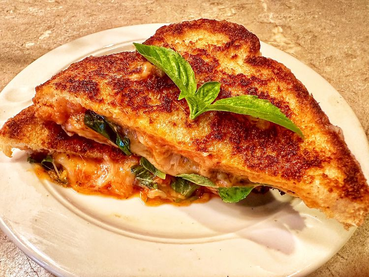

Pizza Grilled Cheese Sandwhich

Dish Description
Looking for a fresh take on two classic comfort foods. This Pizza Grilled Cheese Sandwhich will
brighten any day with some good old fashioned comfort food!
Ingridients
- 1/2 cup shredded mozzarella cheese
- 1/4 cup fresh basil leaves
- 2 tablespoons pizza sauce
- 2 teaspoons mayonnaise
- 2 slices bread
Directions
- Heat a cast iron or nonstick skillet over medium heat. Mix cheese, basil leaves,
and pizza sauce together in a bowl. Set aside.
- Spread 1 teaspoon mayonnaise on each slice of bread. Place bread slices mayo-side-down
in the hot skillet. Spread cheese mixture on 1 slice of bread. Cook until bread turns
golden brown and cheese melts, 3 to 5 minutes. Place second slice of bread on top of
cheese mixture, grilled side up.